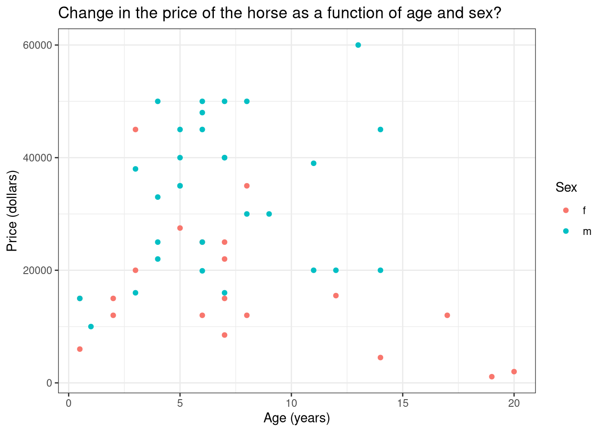
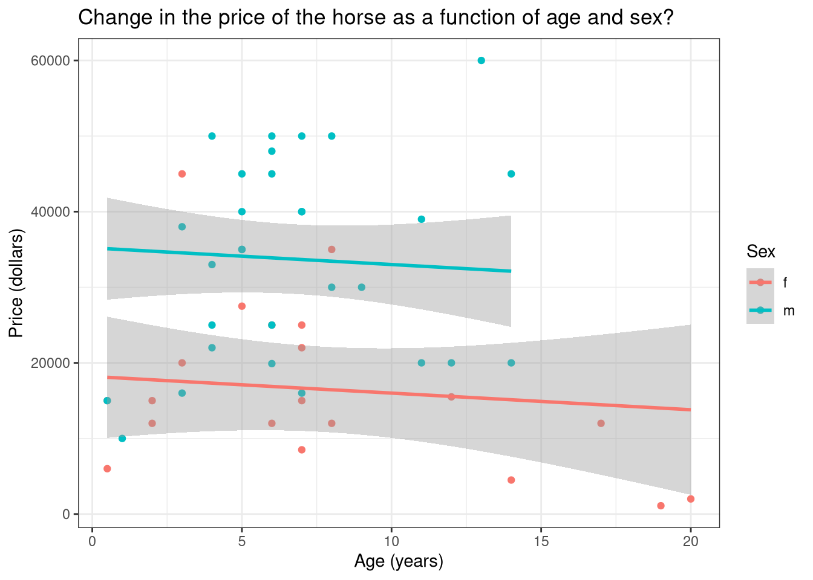
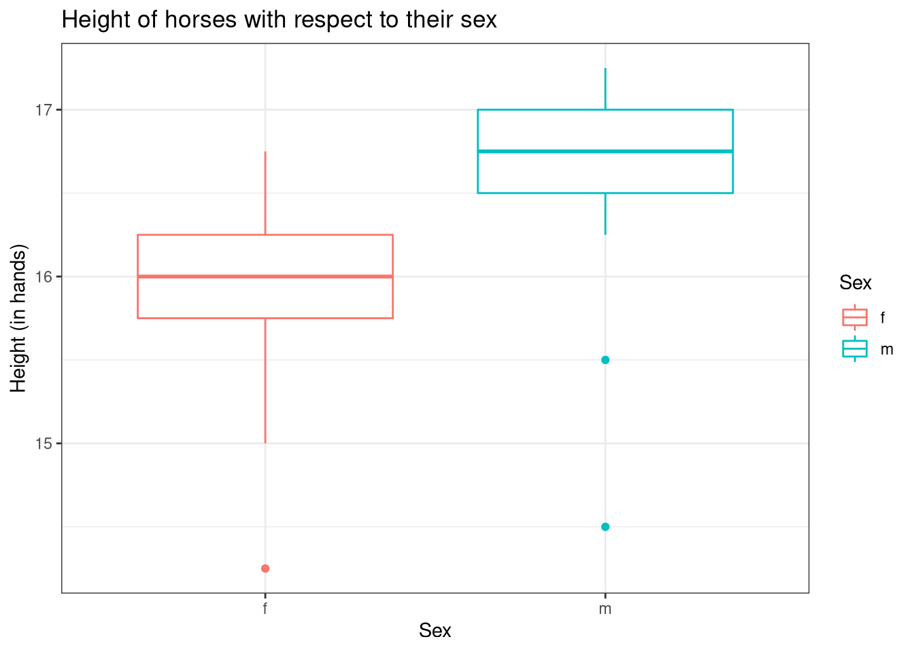
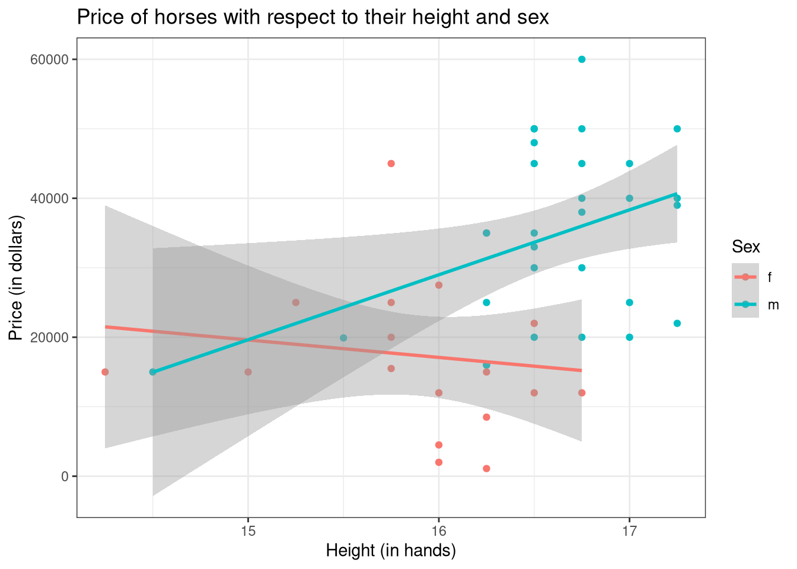
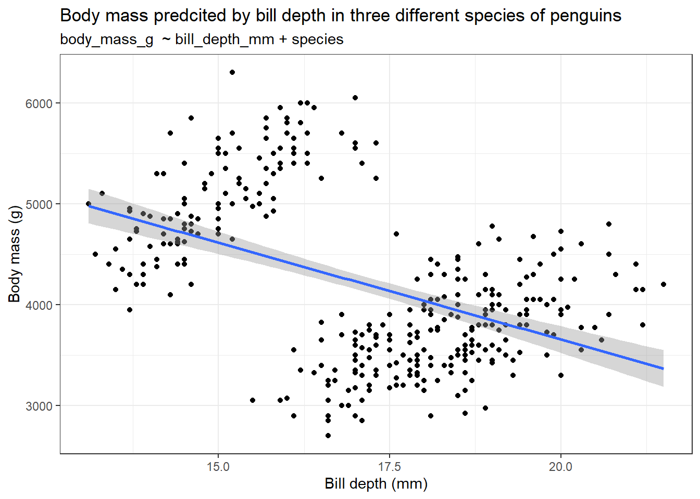
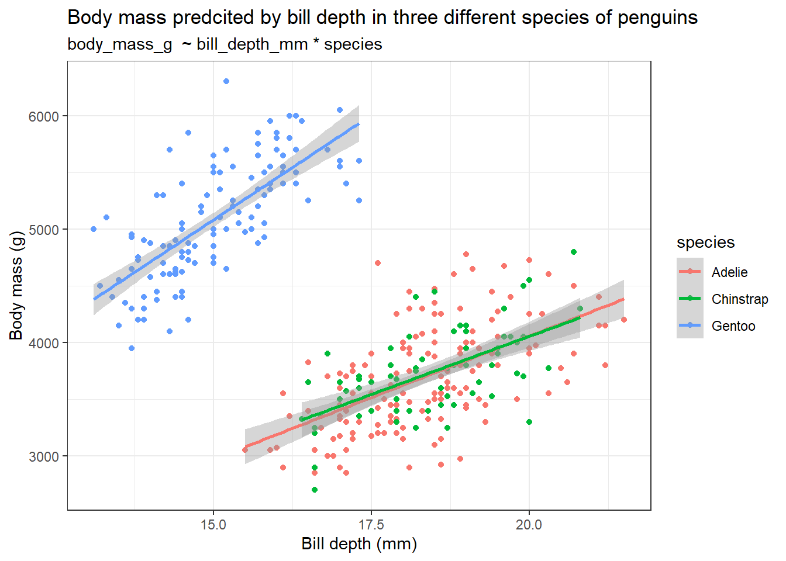
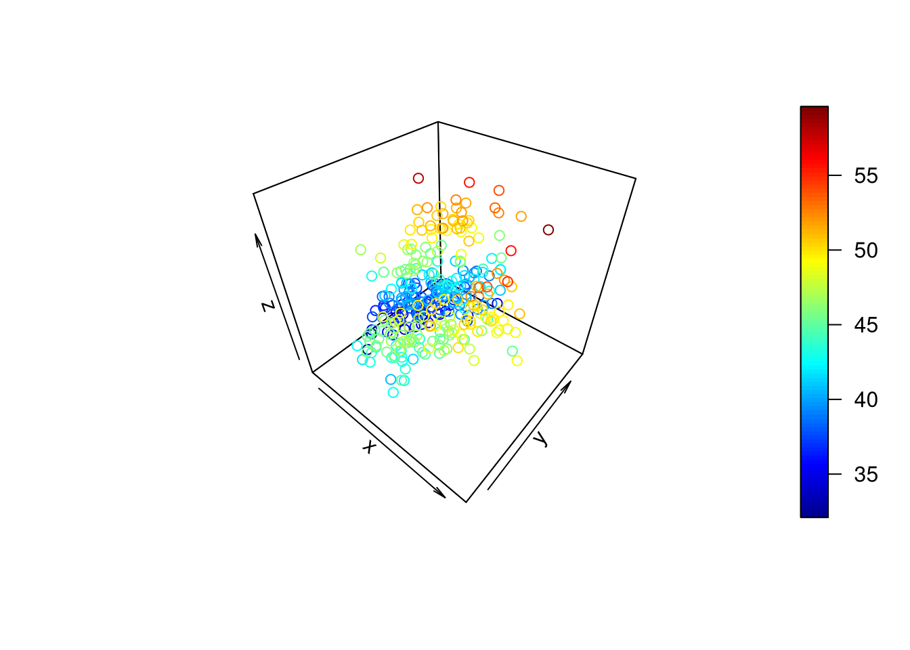
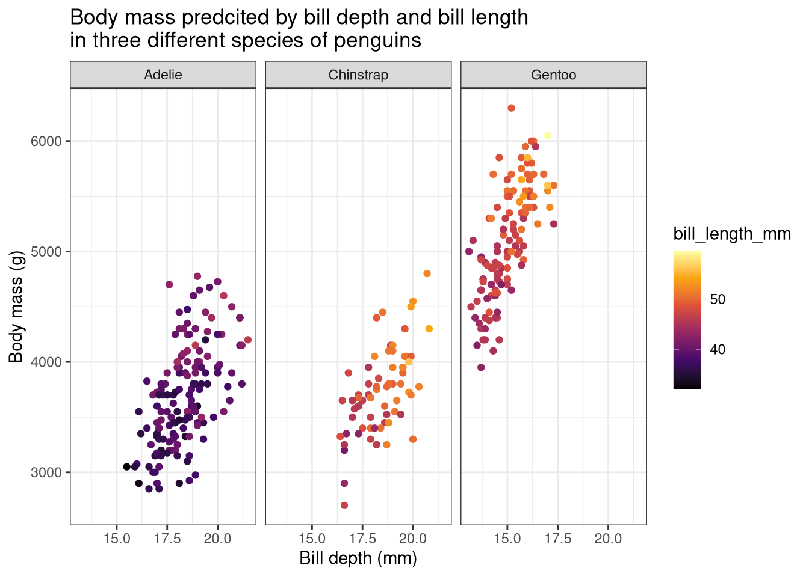
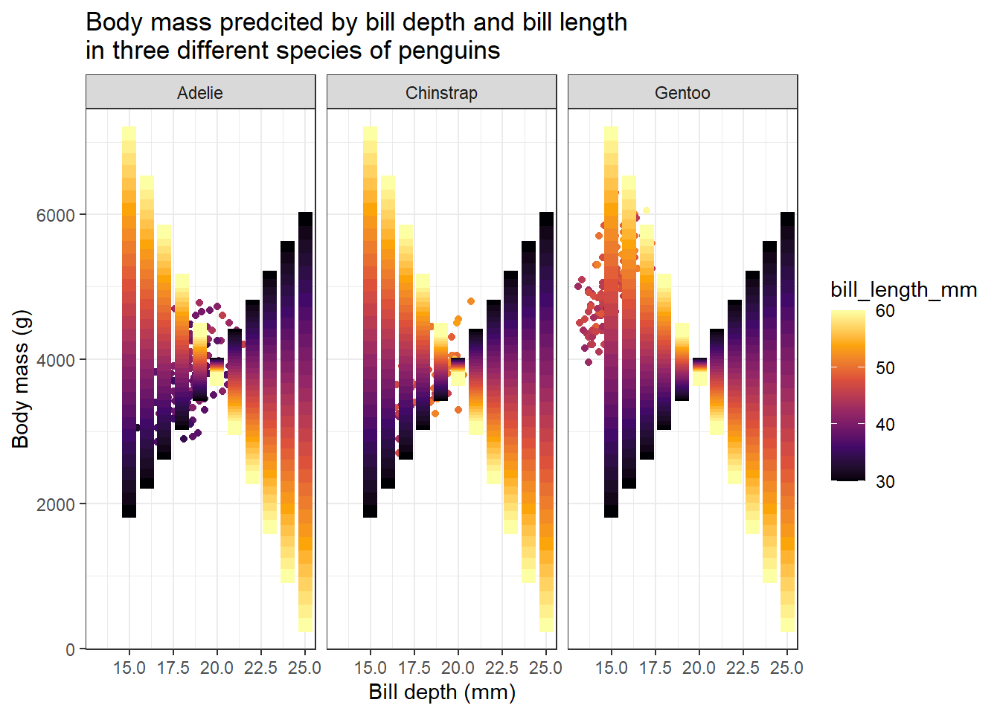
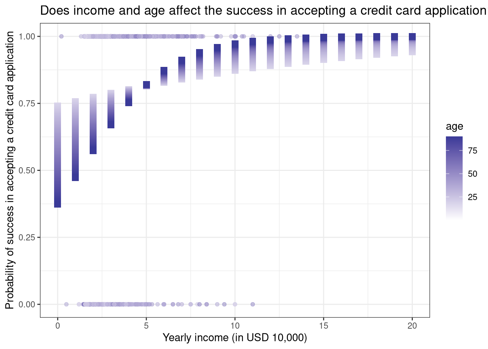

require("https://cdn.jsdelivr.net/npm/juxtaposejs@1.1.6/build/js/juxtapose.min.js")
.catch(() => null)
TL;DR
In this article you will learn;
How to build models with two or more explanatory variables
How to interpret multivariate models
How to predict values using a multivariate model
Assessing a multivariate model
Building models with interaction terms and plotting them
What is Simpson’s paradox
Visualising models with two numerical explanatory variables
1 Introduction
This tutorial is a sequel to the previous tutorial which covered the basics of regression. Here we will extend our knowledge to build models using more than one explanatory variable, how to visualise them and how to interpret the model summaries.
2 Linear regression using multiple variables
In the previous tutorial, we have seen how to build a linear model with a single exploratory variable. Now we will see how to build linear models using two variables.
We will use the HorsePrices dataset from the Stat2Data package in R. The dataset contains the price and related characteristics of horses listed for sale on the internet. Using the dataset, we will see how the price of a horse (Price) changes according to its age (Age) and also dues to its sex (Sex) using a linear model. Here, we have a numerical and a categorical variable as the explanatory variables. First, let us plot the data.
if (!require(Stat2Data)) install.packages('Stat2Data')
library(Stat2Data)
library(dplyr)
library(ggplot2)
data("HorsePrices")
# Plotting the data
HorsePrices %>% ggplot(aes(Age, Price, col = Sex)) + geom_point() +
labs(title = "Change in the price of the horse as a function of age and sex?",
x = "Age (years)",
y = "Price (dollars)") +
theme_bw()
At a glance, for intermediately aged horses, the price is high compared to the rest of the age range. Also, female horses seem to have to be priced less compared to males. Let us see if that is the case by building a linear model. To predict the response variable using multiple explanatory variables, we will append them using the + sign.
library(Stat2Data)
data("HorsePrices")
# Building a linear model
model_lm <- lm(Price ~ Age + Sex, data = HorsePrices)
# Printing model output
summary(model_lm)
Call:
lm(formula = Price ~ Age + Sex, data = HorsePrices)
Residuals:
Min 1Q Median 3Q Max
-24988 -10296 -1494 8286 27653
Coefficients:
Estimate Std. Error t value Pr(>|t|)
(Intercept) 18199.7 4129.3 4.407 6.03e-05 ***
Age -220.1 393.8 -0.559 0.579
Sexm 17008.6 3639.6 4.673 2.52e-05 ***
---
Signif. codes: 0 '***' 0.001 '**' 0.01 '*' 0.05 '.' 0.1 ' ' 1
Residual standard error: 12540 on 47 degrees of freedom
Multiple R-squared: 0.3283, Adjusted R-squared: 0.2997
F-statistic: 11.48 on 2 and 47 DF, p-value: 8.695e-05Unlike the earlier case with one explanatory variable, we now have two coefficient values and an intercept value. We will soon see how to interpret the coefficient values. But for now, we can see that their age does not significantly explain the variance seen in price but sex does.
Now let us try plotting the model. Instead of using the geom_smooth() function in the ggplot2 package in R, we will use the geom_parallel_slopes() function from the moderndive package in R. We will later see why we did not use the geom_smooth() function.
if (!require(moderndive)) install.packages('moderndive')
library(Stat2Data)
library(dplyr)
library(ggplot2)
data("HorsePrices")
# Plotting the data
HorsePrices %>% ggplot(aes(Age, Price, col = Sex)) + geom_point() +
labs(title = "Change in the price of the horse as a function of age and sex?",
x = "Age (years)",
y = "Price (dollars)") +
geom_parallel_slopes() +
theme_bw()
There is a difference in price between male and female horses but their prices are not changing across age. This is exactly what we saw in the model summary results. You can also see that the lines are parallel to each other.
3 Understanding the summary of a multivariate linear model
Given below is the summary output of the multivariate model we built earlier.

In section 1, we have the model formula we used for building the model.
In section 2, we have the first quartile, median and third quartile of the residuals of the model. This tells us whether the residuals are normally distributed if the median value is close to zero and, the first and third quartile values are approximately the same in magnitude.
In section 3, we have the coefficient values of the exploratory variables. Please remember that the variable ‘sex’ has two levels; female and male. By default, R calculates the intercept value for the first level in the first categorical response variable in the model formula. Here, in our case, that first level is female. Therefore, the intercept value gives us the average price value for female horses when age is 0. So here, the y-intercept value of 18199 corresponds to the average price of female horses when age is 0. The second value is the slope of Age, which is -220.1, which corresponds to a decrease in the price by a value of 220.1 dollars when the age of the horse increases by 1 year. The third value corresponds to the difference in the y-intercept value for males as compared to the main intercept value, which is for females and is 18199. In short, it tells us that male horses with age 0 are priced 17008 dollars more on average when compared to female horses. If we want to see the individual averages of the levels in the categorical exploratory variables, then we should use
-1in the model formula, which is something we saw in the earlier tutorial.Section 4 contains metrics which assess model performance. In the earlier tutorial, we saw what residual standard error and R squared values means. Adjusted R square value is a metric similar to R squared value but is calculated for models with multiple explanatory variables. Like R squared, it tells us how much variance seen in the response variable is explained by the explanatory variables and the value lies between 0 and 1. Here we have around 30% variance seen in price explained by both age and sex of the horses.
4 Making predictions using a multivariate linear model
As seen earlier, we can use the models to predict values outside the dataset. We will use the expand_grid() function to make a data frame containing the values for which we want the model to predict.
Let us predict the price of a 20-year-old male horse.
library(Stat2Data)
library(tidyr)
data("HorsePrices")
# Building a linear model
model_lm <- lm(Price ~ Age + Sex, data = HorsePrices)
# Making a exploratory data frame
explorartory_values <- expand_grid(Sex = "m",
Age = 20)
# Predicting values
predict(model_lm, explorartory_values) 1
30806.54 The model predicts that the price of such a horse would be 30806 dollars.
5 Assessing a multivariate linear model fit
5.1 Adjusted R square value
For a simple linear model, we have seen how to interpret the R-squared value, Residual standard error (RSE) value and the Root mean square error (RMSE) value. For a multivariate linear model, the R squared value will be greater compared to a simple linear model and this is because as you add more variables to explain the response variable, the model tends to best fit the available dataset. And in doing so, the model will no longer be useful to make inferences about the general population. So the adjusted R-square value is a metric that describes the percentage of variance explained by the explanatory variable but is measured by penalising the model with multiple explanatory variables by assigning a small penalty term for each additional explanatory variable. The formula for calculating the adjusted R square value is as follows;
\bar{R^2} = 1-(1-R^2)\frac{n_{obs}-1}{n_{obs}-n_{var}-1}
- \bar{R^2} = Adjusted R squared value
- R^2 = R squared value
- n_{obs} = Number of observations
- n_{var} = Number of variables in the model
Please note that the adjusted R square value is always lower than the R squared value.
In R, we can extract the adjusted R square value of a model using the glance() and pull() functions in the broom and dplyr packages in R. The adjusted R square in the table would be under the adj.r.squared column.
6 Linear regression with interacting terms
So far we have built linear models using the HorsePrices dataset where we looked at the association between age and sex on the price of the horses. Now consider another variable, which is the height of the horses (Height). First, let us visualize the heights of the horses of their respective sex.
library(Stat2Data)
library(dplyr)
library(ggplot2)
data("HorsePrices")
# Plotting the data
HorsePrices %>% ggplot(aes(Sex, Height, col = Sex)) + geom_boxplot() +
labs(title = "Height of horses with respect to their sex",
x = "Sex",
y = "Height (in hands)") +
theme_bw()
From the graph, it seems like male horses are typically taller when compared to female horses according to the dataset at hand. Now if we are building a linear model, where we are interested to see the association of height and sex of horses on the price of the horses, we will have to take into consideration that female and male horses have different height distribution, as seen with the box plot above.
One way to account for this is to build separate models using a filtered dataset for each the sex.
library(Stat2Data)
library(dplyr)
library(ggplot2)
data("HorsePrices")
# Filtering horses by their sex
male_horses <- HorsePrices %>% filter(Sex == "m")
female_horses <- HorsePrices %>% filter(Sex == "f")
# Building linear models
male_lm <- lm(Price ~ Height, data = male_horses)
female_lm <- lm(Price ~ Height, data = female_horses)
# Printing model outputs
summary(male_lm)
Call:
lm(formula = Price ~ Height, data = male_horses)
Residuals:
Min 1Q Median 3Q Max
-18671.5 -6325.5 29.9 9001.5 24001.5
Coefficients:
Estimate Std. Error t value Pr(>|t|)
(Intercept) -120546 66679 -1.808 0.0818 .
Height 9346 4016 2.327 0.0277 *
---
Signif. codes: 0 '***' 0.001 '**' 0.01 '*' 0.05 '.' 0.1 ' ' 1
Residual standard error: 11830 on 27 degrees of freedom
(1 observation deleted due to missingness)
Multiple R-squared: 0.1671, Adjusted R-squared: 0.1362
F-statistic: 5.416 on 1 and 27 DF, p-value: 0.0277summary(female_lm)
Call:
lm(formula = Price ~ Height, data = female_horses)
Residuals:
Min 1Q Median 3Q Max
-15366 -6145 -2716 6127 27277
Coefficients:
Estimate Std. Error t value Pr(>|t|)
(Intercept) 57330 74949 0.765 0.455
Height -2515 4710 -0.534 0.601
Residual standard error: 11550 on 16 degrees of freedom
(2 observations deleted due to missingness)
Multiple R-squared: 0.01751, Adjusted R-squared: -0.0439
F-statistic: 0.2851 on 1 and 16 DF, p-value: 0.6007The coefficient values for the two models are very different. For male horses, a unit change in height contributes to a 9346 dollar increase in the price of the horse, but for female horses, the opposite occurs, a unit change in height decreases the price by 2515 dollars (though this difference is not significantly different). Thus we can say that the height of a horse depends on its sex. In other words, the variable height and the variable sex interact with each other. Instead of making separate models like this, R has an easy way to show interacting terms. Instead of using the +, we can use the * sign to indicate an interaction between two variables. The : sign can also be used to explicitly mention which terms interact. The codes given below show how to account for interaction between height and sex for the given dataset.
library(Stat2Data)
library(dplyr)
library(ggplot2)
data("HorsePrices")
# Building linear model with interaction
lm_model_1 <- lm(Price ~ Height * Sex, data = HorsePrices)
# Same model as above but explicitly mentioning interaction terms
lm_model_2 <- lm(Price ~ Height + Sex + Height:Sex, data = HorsePrices)
# Printing model outputs
summary(lm_model_1)
Call:
lm(formula = Price ~ Height * Sex, data = HorsePrices)
Residuals:
Min 1Q Median 3Q Max
-18671.5 -6410.3 -671.5 6971.0 27276.9
Coefficients:
Estimate Std. Error t value Pr(>|t|)
(Intercept) 57330 76078 0.754 0.4552
Height -2515 4781 -0.526 0.6016
Sexm -177876 100786 -1.765 0.0847 .
Height:Sexm 11861 6222 1.906 0.0633 .
---
Signif. codes: 0 '***' 0.001 '**' 0.01 '*' 0.05 '.' 0.1 ' ' 1
Residual standard error: 11730 on 43 degrees of freedom
(3 observations deleted due to missingness)
Multiple R-squared: 0.4086, Adjusted R-squared: 0.3673
F-statistic: 9.901 on 3 and 43 DF, p-value: 4.377e-05summary(lm_model_2)
Call:
lm(formula = Price ~ Height + Sex + Height:Sex, data = HorsePrices)
Residuals:
Min 1Q Median 3Q Max
-18671.5 -6410.3 -671.5 6971.0 27276.9
Coefficients:
Estimate Std. Error t value Pr(>|t|)
(Intercept) 57330 76078 0.754 0.4552
Height -2515 4781 -0.526 0.6016
Sexm -177876 100786 -1.765 0.0847 .
Height:Sexm 11861 6222 1.906 0.0633 .
---
Signif. codes: 0 '***' 0.001 '**' 0.01 '*' 0.05 '.' 0.1 ' ' 1
Residual standard error: 11730 on 43 degrees of freedom
(3 observations deleted due to missingness)
Multiple R-squared: 0.4086, Adjusted R-squared: 0.3673
F-statistic: 9.901 on 3 and 43 DF, p-value: 4.377e-05Since the female is the first level in the variable Sex, the intercept is estimated for female horses. This is the same value that we got from the female_lm model we made earlier. We also got the slope value for height, which is calculated for female horses (the same value as that from the female_lm model). The value for male horses is given as Sexm as is -177876, this value is relative to female horses and is given as the difference between the y-intercepts. We can find the actual y-intercept value for males by adding the Sexm value and the (Intercept) value which is -120546 ( = 57330 + -177876). This is the intercept value for male horses which we got from the male_lm model earlier. Now let us look at the Height:Sexm value, which is given as 11861. This is the slope value showing how the price change when height change for male horses, but it is calculated relative to female horses. To get the actual slope for male horses, we have to add the slope of Height and Height:Sexm values. In doing so we get a value of 9346 ( = -2515 + 11861) which is the slope of Height, which we got from the male_lm model earlier.
7 Plotting linear model with an interaction term
When we were using the geom_parallel_slopes() function from the moderndive package, I mentioned that we will not use geom_smooth() function from the ggplot2 package. This is because when we specify the col variable, the geom_smooth() function automatically plots the trend line by considering the x-axis variable and the colour variable to be interacting.
library(Stat2Data)
library(dplyr)
library(ggplot2)
data("HorsePrices")
# Plotting linear model with interaction terms
HorsePrices %>% ggplot(aes(Height, Price, col = Sex)) + geom_point() +
labs(title = "Price of horses with respect to their height and sex",
x = "Height (in hands)",
y = "Price (in dollars)") +
geom_smooth(method = "lm") +
theme_bw()
The slope for male horses is steeper than for female horses. This indicates that male horses have their price increased significantly as their height increased. Whereas female horses have their price change non significantly when their height change. This is exactly what we see in the male_lm and female_lm model coefficients.
8 Simpson’s Paradox
Simpson’s paradox occurs when a result conveyed using the whole dataset is different from the results conveyed using the different groups within the same dataset. In simple words, the results of the model change drastically due to the inclusion of a variable which was previously not included in the model. Let’s see what this means.
We will use the penguins dataset from the palmerpenguins package in R. The dataset contains body measurements taken from three different species of penguins from Antarctica. Let us build a model where the body mass (body_mass_g) is predicted by bill depth (bill_depth_mm) alone. Let us also build another build with the same model formula as before but this time, we will include an interaction term between bill depth and species (species).
if (!require(palmerpenguins)) install.packages('palmerpenguins')
library(palmerpenguins)
# Building linear model
model_lm <- lm(body_mass_g ~ bill_depth_mm, data = penguins)
# Building linear model with interaction term
model_lm_interaction <- lm(body_mass_g ~ bill_depth_mm * species, data = penguins)
# Printing model outputs
summary(model_lm)
Call:
lm(formula = body_mass_g ~ bill_depth_mm, data = penguins)
Residuals:
Min 1Q Median 3Q Max
-1607.38 -510.10 -66.96 462.43 1819.28
Coefficients:
Estimate Std. Error t value Pr(>|t|)
(Intercept) 7488.65 335.22 22.34 <2e-16 ***
bill_depth_mm -191.64 19.42 -9.87 <2e-16 ***
---
Signif. codes: 0 '***' 0.001 '**' 0.01 '*' 0.05 '.' 0.1 ' ' 1
Residual standard error: 708.1 on 340 degrees of freedom
(2 observations deleted due to missingness)
Multiple R-squared: 0.2227, Adjusted R-squared: 0.2204
F-statistic: 97.41 on 1 and 340 DF, p-value: < 2.2e-16summary(model_lm_interaction)
Call:
lm(formula = body_mass_g ~ bill_depth_mm * species, data = penguins)
Residuals:
Min 1Q Median 3Q Max
-845.89 -254.74 -28.46 228.01 1161.41
Coefficients:
Estimate Std. Error t value Pr(>|t|)
(Intercept) -283.28 437.94 -0.647 0.5182
bill_depth_mm 217.15 23.82 9.117 <2e-16 ***
speciesChinstrap 247.06 829.77 0.298 0.7661
speciesGentoo -175.71 658.43 -0.267 0.7897
bill_depth_mm:speciesChinstrap -12.53 45.01 -0.278 0.7809
bill_depth_mm:speciesGentoo 152.29 40.49 3.761 0.0002 ***
---
Signif. codes: 0 '***' 0.001 '**' 0.01 '*' 0.05 '.' 0.1 ' ' 1
Residual standard error: 354.9 on 336 degrees of freedom
(2 observations deleted due to missingness)
Multiple R-squared: 0.807, Adjusted R-squared: 0.8041
F-statistic: 281 on 5 and 336 DF, p-value: < 2.2e-16We get a rather interesting and contradicting set of results when we compare the summary outputs for both models. In the model without the species variable, greater bill depth predicts lower body mass in penguins. But, when we add the species variable, the trend reverses, increasing bill depth is associated with an increase in body mass.
It is easier to plot the models and see. Use the slider to see the difference between the plots.
library(palmerpenguins)
# Plotting the model wihtout interaction term
ggplot(penguins, aes(bill_depth_mm, body_mass_g)) +
geom_point() +
labs(title = "Body mass predcited by bill depth in three different species of penguins",
subtitle = "body_mass_g ~ bill_depth_mm + species",
x = "Bill depth (mm)",
y = "Body mass (g)") +
geom_smooth(method = "lm") +
theme_bw()
# Plotting the model with interaction term
ggplot(penguins, aes(bill_depth_mm, body_mass_g, col = species)) +
geom_point() +
labs(title = "Body mass predcited by bill depth in three different species of penguins",
subtitle = "body_mass_g ~ bill_depth_mm * species",
x = "Bill depth (mm)",
y = "Body mass (g)") +
geom_smooth(method = "lm") +
theme_bw()library(palmerpenguins)
# Plotting the model wihtout interaction term
ggplot(penguins, aes(bill_depth_mm, body_mass_g)) +
geom_point() +
labs(title = "Body mass predcited by bill depth in three different species of penguins",
subtitle = "body_mass_g ~ bill_depth_mm + species",
x = "Bill depth (mm)",
y = "Body mass (g)") +
geom_smooth(method = "lm") +
theme_bw()
# Plotting the model with interaction term
ggplot(penguins, aes(bill_depth_mm, body_mass_g, col = species)) +
geom_point() +
labs(title = "Body mass predcited by bill depth in three different species of penguins",
subtitle = "body_mass_g ~ bill_depth_mm * species",
x = "Bill depth (mm)",
y = "Body mass (g)") +
geom_smooth(method = "lm") +
theme_bw()
So it is always better to visualize the dataset and build models according to the question at hand.
9 Visualizing linear models with two numerical explanatory variables
Often you will be building models with two or more two explanatory variables. If some of those explanatory variables are categorical then it is easier to plot them as we can assign different colour or shape variables and we can also use faceting. But if they are all numerical variables then it is kind of difficult to plot them. We can either rely on three-dimensional plots or use a continuous colour scale gradient in a two-dimensional plot. Let us see how to plot the graphs.
We will again use the penguins dataset from the palmerpenguins package in R. We will build a model to predict body mass (body_mass_g) using bill length (bill_length_mm) and bill depth (bill_depth_mm). Let us first try to plot a 3D plot using the scatter3D() function from the {plot3D} package in R.
if (!require(plot3D)) install.packages('plot3D')
library(plot3D)
library(palmerpenguins)
# Plotting a 3D plot
scatter3D(penguins$body_mass_g, penguins$bill_depth_mm, penguins$bill_length_mm)
Well, 3D plotting is a mess, as you can see from the above plot. It is very hard to make out any useful findings using the graph above. So instead of this, we can return to our conventional 2D plot where we can use a continuous colour gradient to visualize the third numerical variable.
library(palmerpenguins)
library(ggplot2)
library(dplyr)
data("penguins")
# Plotting the graph
penguins %>% ggplot(aes(bill_depth_mm, body_mass_g, col = bill_length_mm)) +
geom_point() +
labs(title = "Body mass predcited by bill depth and bill length in three different species of penguins",
subtitle = "body_mass_g ~ bill_depth_mm * species",
x = "Bill depth (mm)",
y = "Body mass (g)") +
scale_color_viridis_c(option = "inferno") +
theme_bw()
From the graph, it roughly seems like penguins with greater body mass have a longer and narrower bill. We can further subdivide this plot by the species category using faceting.
library(palmerpenguins)
library(ggplot2)
library(dplyr)
data("penguins")
# Making a function to make line breaks in text
addline_format <- function(x,...){
gsub(',','\n',x)}
# Plotting the graph
penguins %>% ggplot(aes(bill_depth_mm, body_mass_g, col = bill_length_mm)) +
geom_point() +
labs(title = addline_format("Body mass predcited by bill depth and bill length,in three different species of penguins"),
x = "Bill depth (mm)",
y = "Body mass (g)") +
scale_color_viridis_c(option = "inferno") +
facet_wrap(~ species) +
theme_bw()
When we group the data according to different species, we get the opposite result as compared before. Here, we can see that penguins with heavier body mass have broader and longer bills.
Now let us plot the predicted values from the linear models to see the general trend of the data.
library(palmerpenguins)
library(ggplot2)
library(dplyr)
library(tidyr)
data("penguins")
# Making prediction
model_lm <- lm(body_mass_g ~ bill_depth_mm * bill_length_mm, data = penguins)
explorartory_values <- expand_grid(
bill_depth_mm = seq(15,25,1),
bill_length_mm = seq(30,60,1),
)
predicted_values <- explorartory_values %>% mutate(
body_mass_g = predict(model_lm, explorartory_values)
)
# Plotting the graph with predicted values
penguins %>% ggplot(aes(bill_depth_mm, body_mass_g, col = bill_length_mm)) +
geom_point() +
labs(title = "Body mass predcited by bill depth and bill length
in three different species of penguins",
x = "Bill depth (mm)",
y = "Body mass (g)") +
scale_color_viridis_c(option = "inferno") +
facet_wrap(~ species) +
geom_point(data = predicted_values, aes(y = body_mass_g), size = 3, shape = 15) +
theme_bw()
We got a nice gradient-coloured graph. From the predicted values we got from the model we can understand how body mass changes with bill depth and bill length. We can see two clear patterns. For penguins with lower bill length values, the body mass increases as bill depth increases. The opposite is true for penguins with larger values for bill length. For these penguins, body mass decreases as bill depth increases.
10 Visualizing logistic models with two numerical explanatory variables
We have seen how to include two or more variables in a linear model. The same procedure applies to logistic models. Now we will see how to visualize a logistic model with two or more numerical variables.
We will use the CreditCard dataset in the {AER} package in R. The dataset contains the credit history of a sample of applicants for a type of credit card. We will predict to see the success of the acceptance of the credit card application (card) using the yearly income (income) and age (age) of the applicant. The code for making the plot is very similar to that we have seen earlier.
if (!require(AER)) install.packages('AER')
library(AER)
library(ggplot2)
library(dplyr)
library(tidyr)
data("CreditCard")
# Making prediction
model_logistic <- glm(card ~ income * age, data = CreditCard, family = "binomial")
explorartory_values <- expand_grid(
income = seq(0,20,1),
age = seq(18,90,1),
)
predicted_values <- explorartory_values %>% mutate(
card = predict(model_logistic, explorartory_values, type = "response")
)
# Plotting the graph with predicted values
ggplot(CreditCard, aes(income, as.integer(card)-1, col = age)) +
geom_point(alpha = 0.5) +
labs(title = "Does income and age affect the success in accepting a credit card application?",
x = "Yearly income (in USD 10,000)",
y = "Probability of success in accepting a credit card application") +
scale_color_gradient2() +
geom_point(data = predicted_values, aes(y = card), size = 3, shape = 15) +
theme_bw()
We get some interesting results. People with higher yearly incomes have a higher chance of getting a credit card. But for age, younger people with lower yearly income have more chance of getting a credit card as compared to older people with the same level of yearly income. But this trend reverses when yearly income crosses 50,000 dollars.
11 Conclusion
It is time to wrap up! In this tutorial we have learned the following things;
How to build models with two or more explanatory variables
How to interpret multivariate models
How to predict values using a multivariate model
Assessing a multivariate model
Building models with interaction terms and plotting them
What is Simpson’s paradox
Visualising models with two numerical explanatory variables
Last updated on
[1] "2022-09-19 14:49:47 IST"Reuse
Citation
BibTeX citation:
@online{johnson2022,
author = {Jewel Johnson},
editor = {},
title = {Intermediate {Regression} in {R}},
date = {2022-09-19},
url = {https://one-carat-blog.netlify.app//tutorials/stat_basic/inter_reg.html},
langid = {en}
}
For attribution, please cite this work as:
Jewel Johnson. 2022. “Intermediate Regression in R.”
September 19, 2022. https://one-carat-blog.netlify.app//tutorials/stat_basic/inter_reg.html.